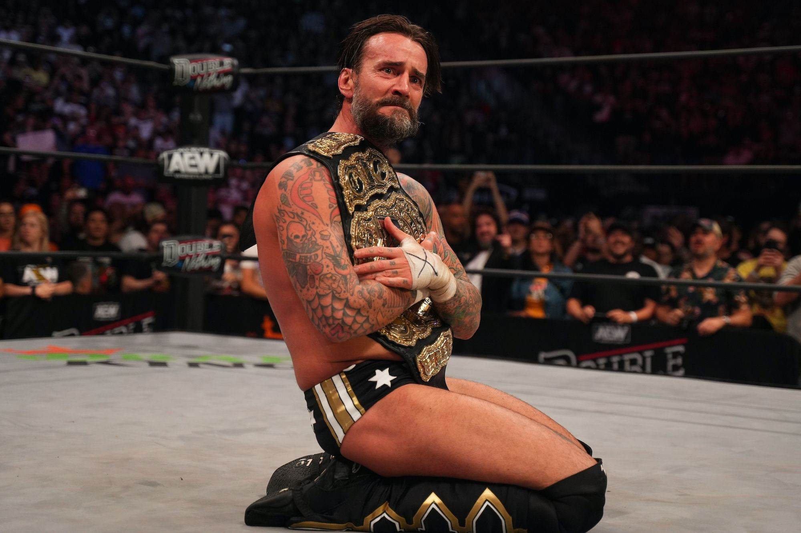

CM Punk deja AEW?
La pelea entre bastidores de AEW All Out, entre CM Punk y The Ellite, tras la descontrolada entrevista de CM Punk junto a Tony Khan.Genero que CM Punk tenga que anunciar una falsa lesión, teniendo que dejar vacante el título de AEW y poniendo en duda la rescición de su contrato.
Sting mas vigente que nunca.
Mediante un comunicado, publicado en las redes sociales, All Elite Wrestling ha confirmado que Sting no podrá realizar su aparición en el Fan Fest de AEW Double or Nothing que se celebrará este fin de semana con motivo de la celebración del PPV. "Debido a una lesión producida la semana pasada, @Sting no ha sido autorizado a viajar y desafortunadamente no estará en el #AEWDoN Fan Fest Meet & Greets de este sábado. Para los fans que compraron entradas para ver a #TheIcon, estén atentos a su bandeja de entrada para recibir información sobre reembolsos".
Y2J campeon de ROH.
Durante las transmisiones de AEW Dynamite a través de TBS y Fite TV, el luchador Chris Jericho logró retener el Campeonato Mundial de ROH tras derrotar en mano a mano a Dalton Castle. Este fue el tercer enfrentamiento de la jornada especial de martes en Cleveland, Ohio. Después de responder el código de honor con un dedo medio, Castle empezó con una sólida ofensiva que dejó en jaque a su rival. Después de un intercambio físico, los asistentes de "The Peacock" irrumpieron en ringside.
Rivalidad del año?
Durante las transmisiones de AEW Dynamite a través de TBS y Fite TV, el luchador Bryan Danielson logró avanzar a la final del torneo por el Campeonato Mundial vacante tras derrotar en mano a mano a Chris Jericho. Este fue el enfrentamiento principal de la jornada de miércoles en Albany, New York. Los dos competidores protagonizaron un tenso intercambio físico que vio en peligro a "The American Dragon" cuando se dañó la pierna en ringside. Chris intentó sacar provecho con su Walls of Jericho y el Figure Four. Sin embargo, Bryan logró revertir con su LeBelle Lock para obtener la victoria por rendición.